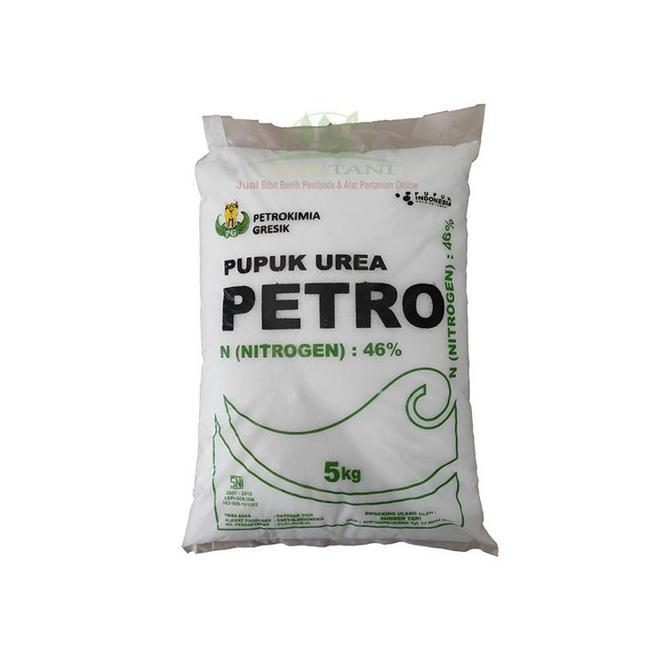
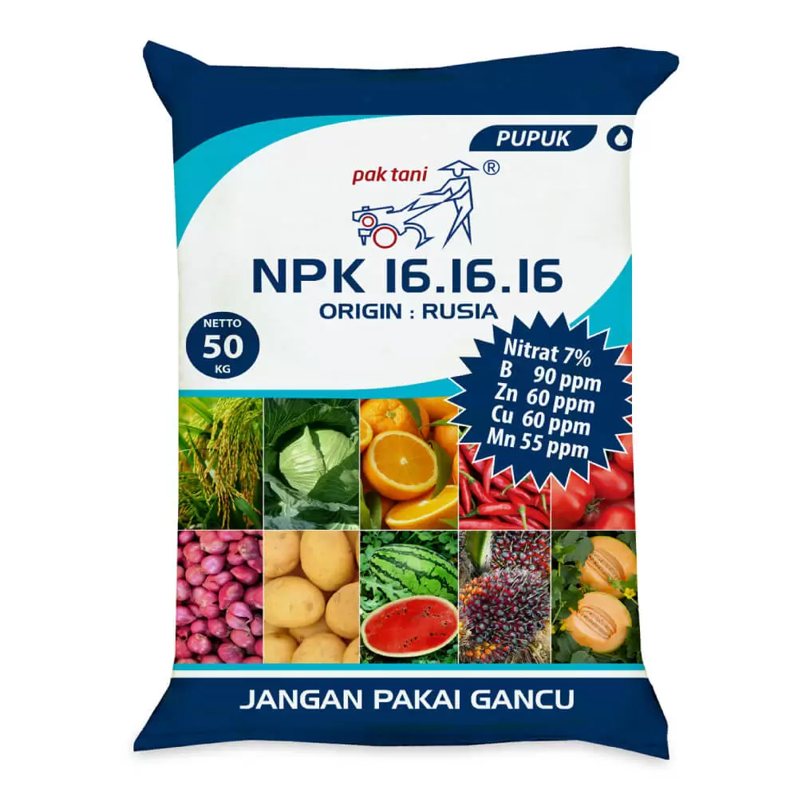
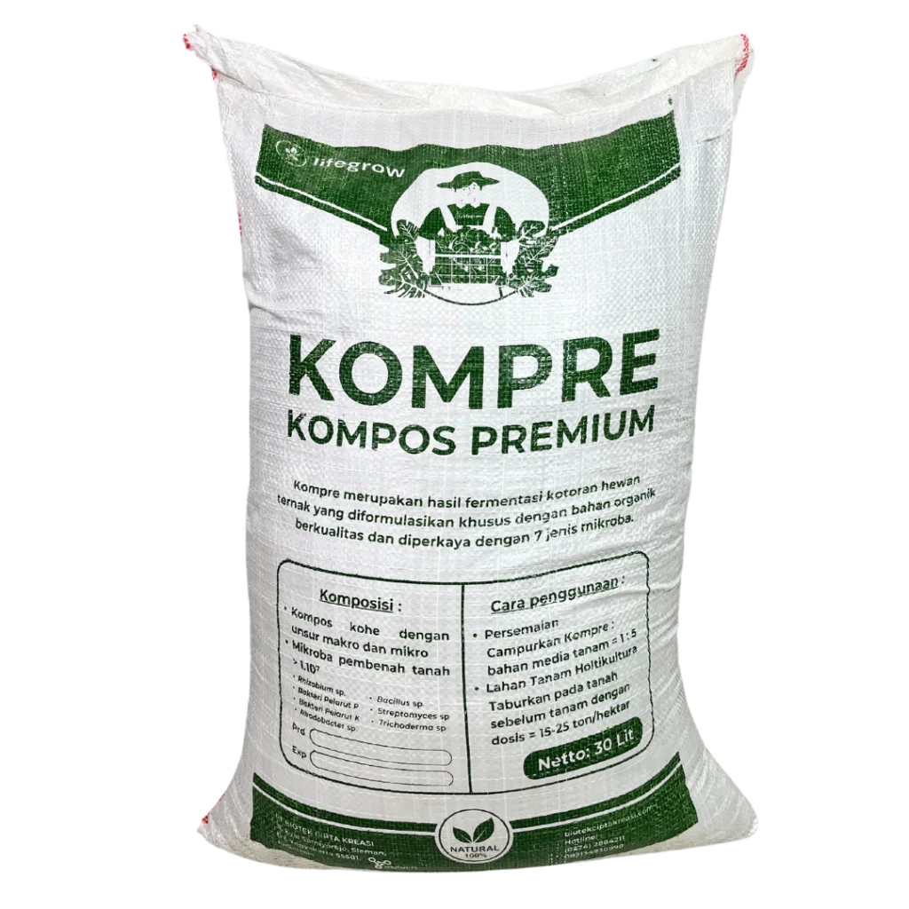
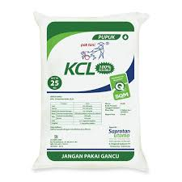
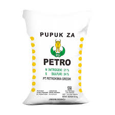

Pupuk Urea Nitrogen
Deskripsi
Mempercepat pertumbuhan daun dan batang, membuat tanaman terlihat lebih hijau dan rimbun.

Pupuk NPK Mutiara 16-16-16
Deskripsi
Mengandung unsur hara makro yang lengkap untuk menjamin kesehatan tanaman secara menyeluruh.

Pupuk Organik Kompos
Deskripsi
Terbuat dari bahan organik pilihan yang membantu tanah menahan air dan nutrisi lebih lama.

Pupuk KCL (Kalium)
Deskripsi
Sangat penting untuk pengisian buah dan umbi agar hasil panen lebih berbobot dan manis.

Pupuk Organik Cair (POC)
Deskripsi
Mengandung mikroba menguntungkan yang merangsang hormon pertumbuhan pada tanaman.

Pupuk ZA (Zwavelzure Amoniak)
Deskripsi
Sangat cocok untuk tanaman bawang, cabai, dan tebu guna meningkatkan rasa dan daya simpan.

Pupuk Hayati Mikoriza
Deskripsi
Membantu tanaman tetap bertahan di kondisi lahan kering dan menyerap fosfor lebih maksimal.